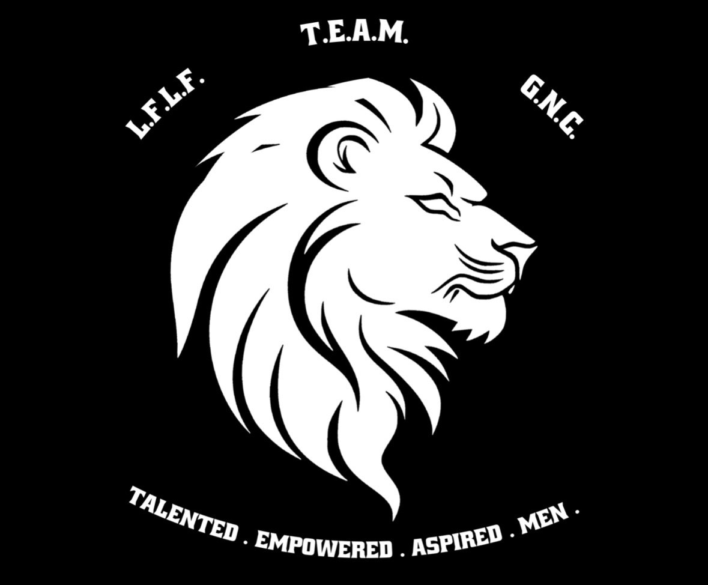
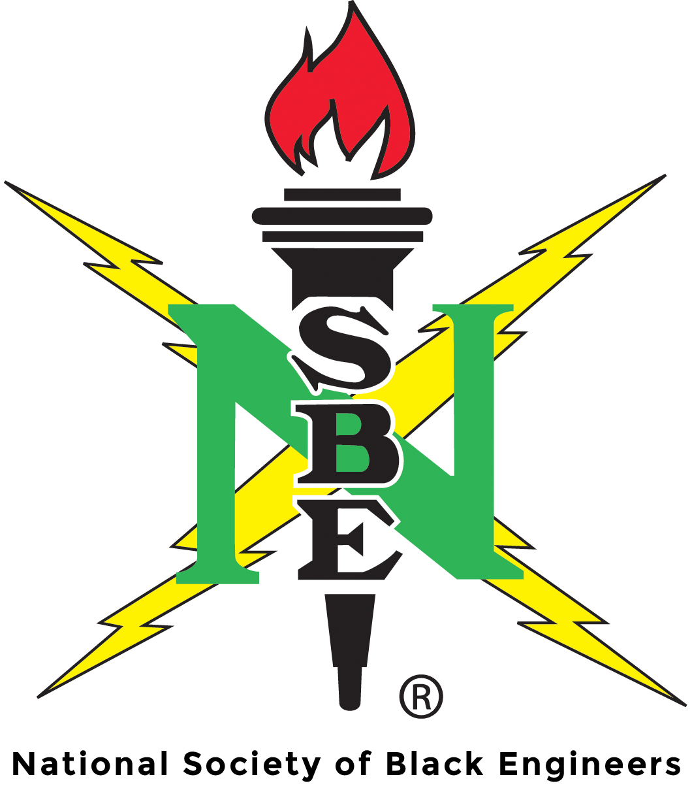

Greeting
Hello visitors! As you can see, my name is Emmanuel. First, I would like to thank you for stopping by my portfolio webpage.
Education
I graduated from East Carolina University in May 2026 with my Bachelor of Science in Information and Cybersecurity Technology, with a Concentration in Cybersecurity. I also minored in Business Administration.
Activities
During my time at ECU, I was apart of a few student organizations. Most notably was TEAM, which stood for Talented Empowered Aspiring Men, a men's organization where like-minded individuals come together to discuss serious topics, create a sense of brotherhood, and do community service to bridge the gap between ECU and the residents of Greenville.
I served as the President of TEAM in 2024-2025, and as the Community Service Chair in 2023-2024. These E-Board positions taught me valuable soft skills: leadership, people management, event coordination, and communication.
Along with TEAM, I also served as the Senator of the ECU Chapter of NSBE, The National Society of Black Engineers.


Career Goals
For my short-term career goals, I'm currently working towards obtaining a Junior or entry-level Dev/Engineer role. The roles include:
- Backend Developer
- Software Developer/Engineer
- Web Developer
- Frontend Developer
- Fullstack Developer
For my long-term career goals, I want to pivot into the AI specialization and become an Applied AI Engineer. With this still being a somewhat new role, I was quickly drawn to how current engineers are practically integrating AI to improve their systems. I have some experience utilizing AI to automate security system policies and the associated documentation. The overall project was interesting and insightful on the various ways AI can be applied.
With my Cybersecurity degree, I initially wanted to go into cloud security. However, my professor from my Security Policies course showed the class his local CLI AI-bot that trained to be used as a Red-Team tool. That caused me to venture into the realm of AI, where I learned the fundamentals and career-roadmap leading to a role in AI. From there, I began learning the necessary skills to become a Backend Developer as that role naturally transitions to an Applied AI Engineering role.